Білди
Основні варіанти розстановки талантів для танкування.
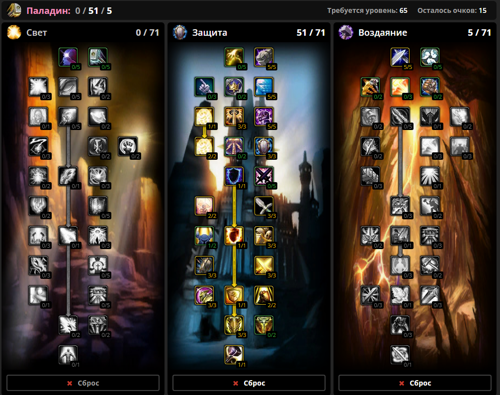
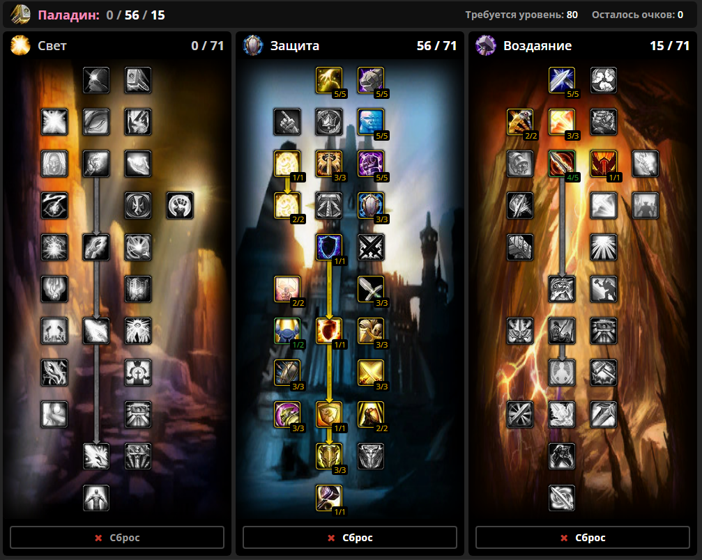
Захіл по вам збільшено, хіли скажуть дякую
Під ппг також прекрасно підійде
Можна також вкинутись замість кріта в 4/5 Печать безупречности гілки "Свет"
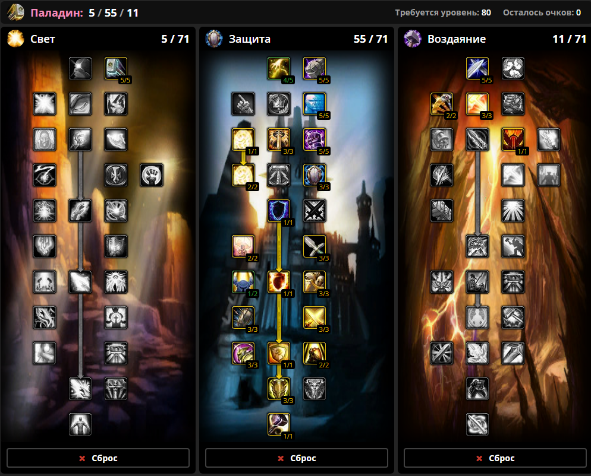
- кріт
+ дамаг від печатки мщения/порчи
Також підходить під ппг, можна танчити ІК
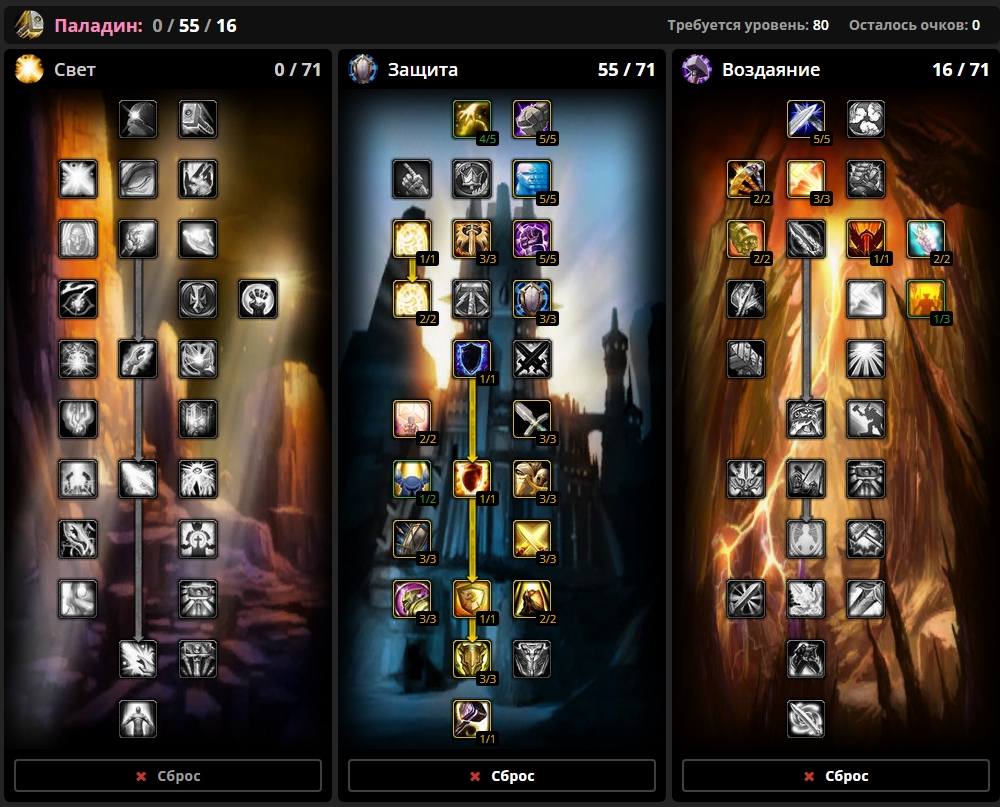
Ви чудово знаєте, що шмот ще умовно ніякий, але захілу вам ну дуже хочеться
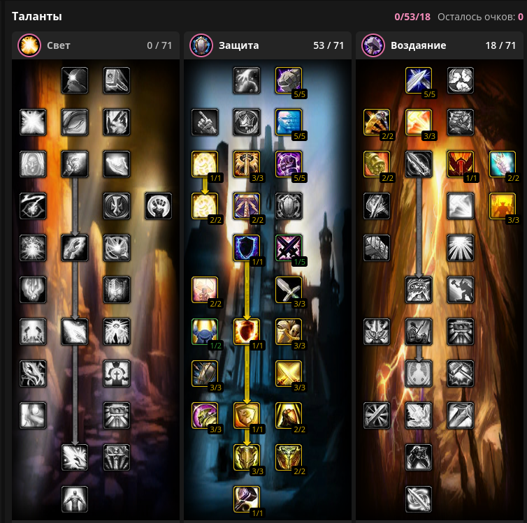
(ну або у вас є шмот із хардкапом мастерства)
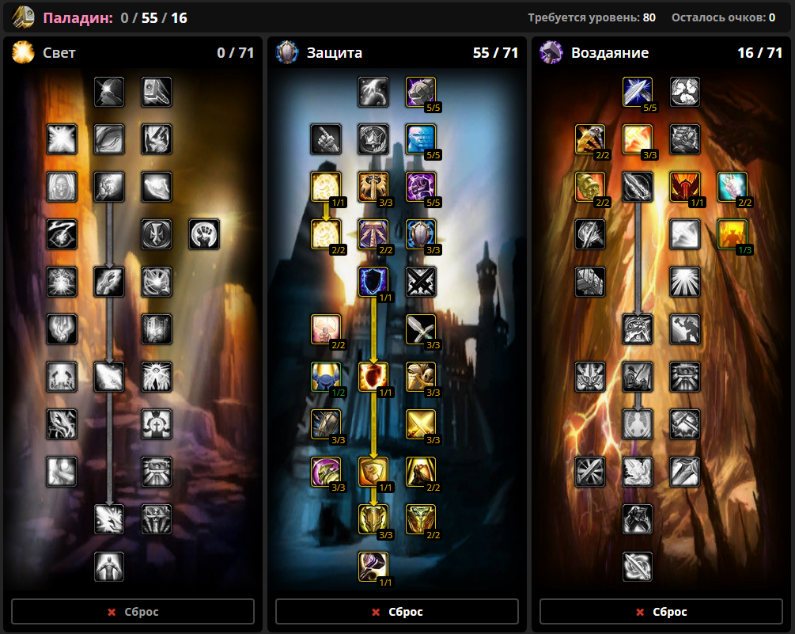
- КД стану з молотка 30 секунд
Можна вкинути в печатку, якщо хочете
Різниця:
1% по гуманоїдам, демонам, нежиті, елементалях
3% ефективності печаті мщения/порчи
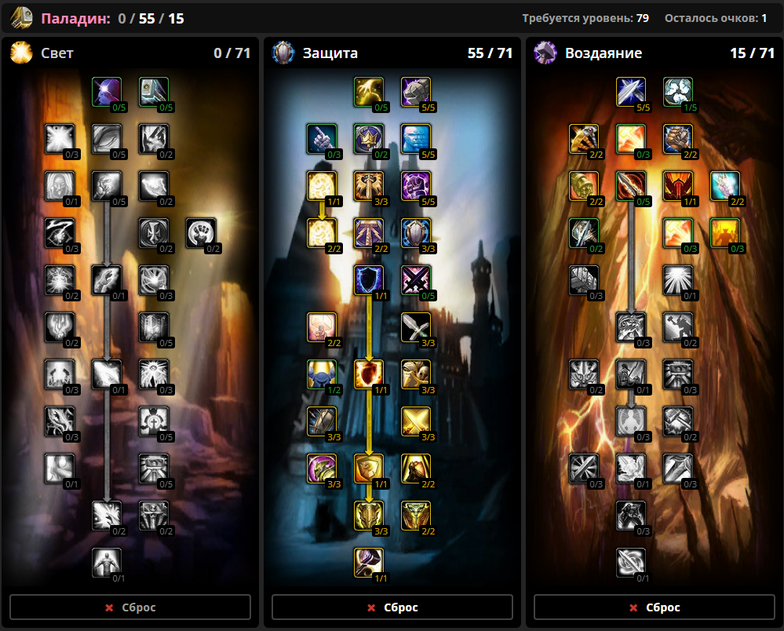
Зустрічається наступний варіант, аргументуючи тим, що у вас в рейді є ретрік
Але у ретріка також вкачані кулаки, а вам то воно нащо, вар і на ап покричить, йому також хочеться дамагу
знову таки куди вкинути останній талант вирішіть самі...
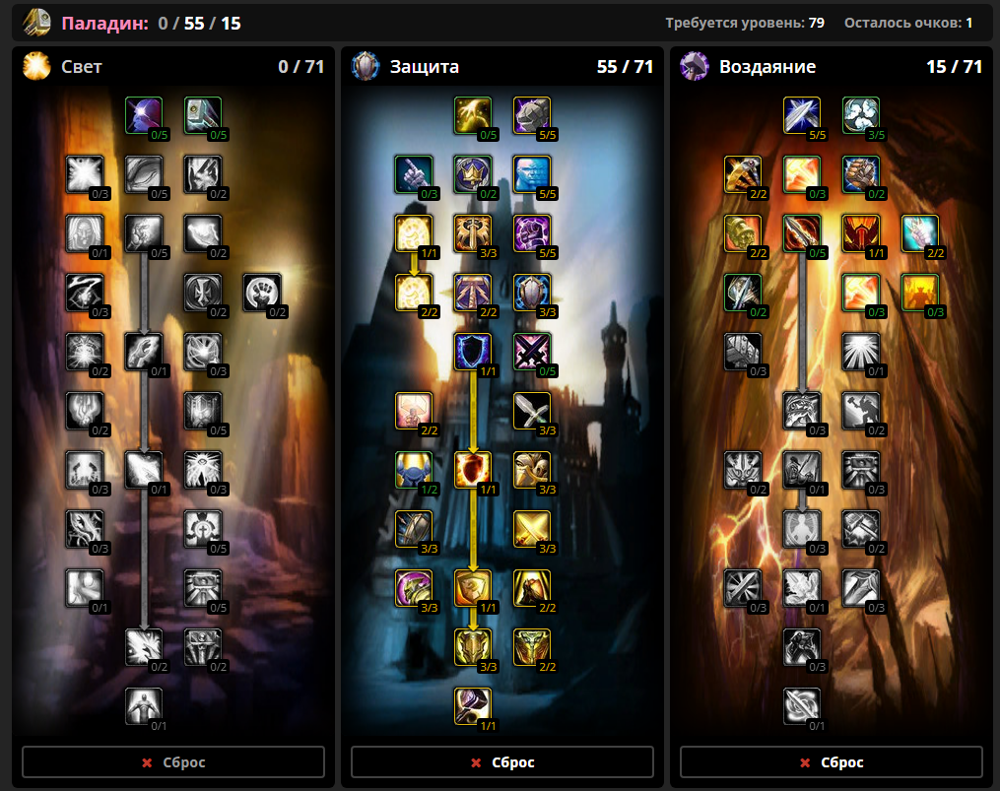
Скоріш із рубрики "ШКІДЛИВІ ПОРАДИ"
Ви в рейді навряд просядете по мані, щоб вкинути таланти в перший тір
Ротація
Пріоритет умінь у вас відсутній, дивіться по ситуації :)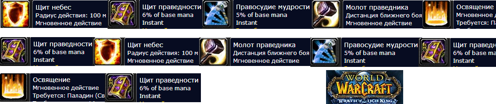
Ваш геймплей перетвориться в ось це, моє діло надати :)
Капи
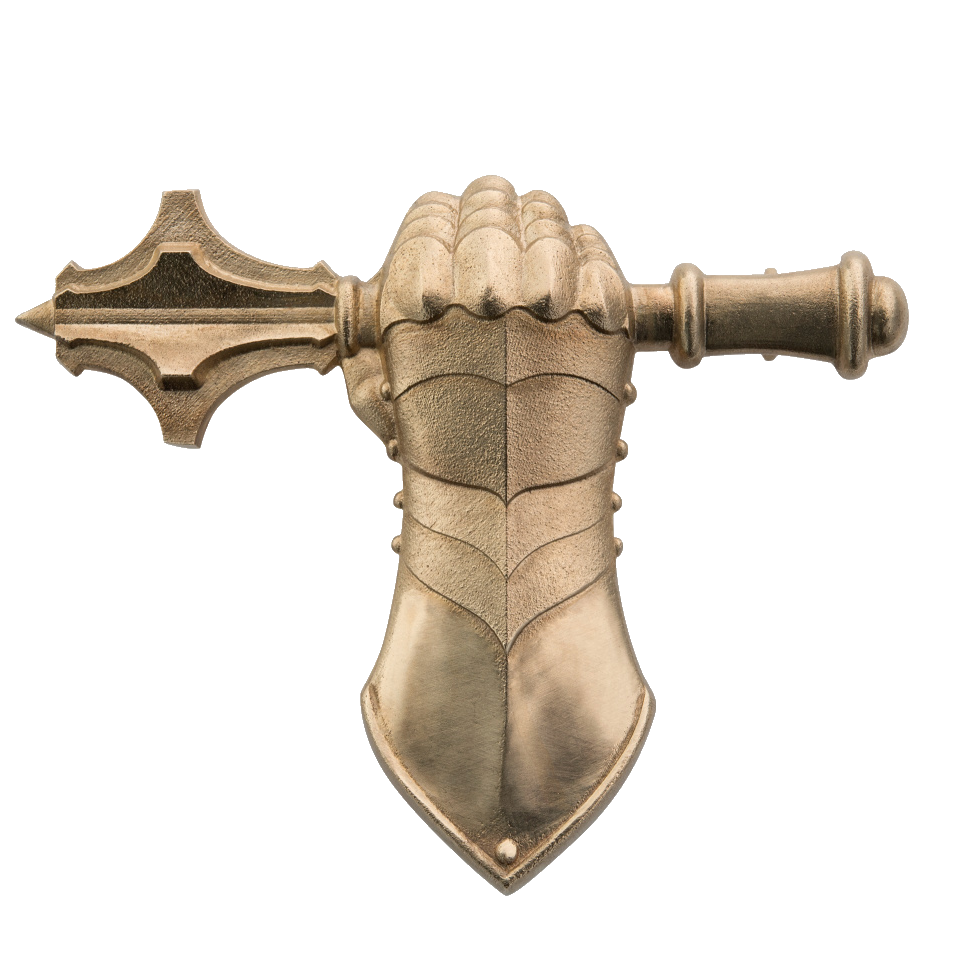
8% меткости
26 мастерства
(16 + бонус від символу при активній Печать порчи / мщения)
Оскільки ви танк, необхідно зібрати хоча б мін.кап дефа задля запобігання крітування босом:
Защита: 540+
Броня: чим більше - тим краще, прагнемо збирати 70+%
Для драконів:
Защита: 560+
Мастерство: 56 (~335 одиниць при наведенні)
Броня: чим більше - тим краще, тому діставайте свій шмот з армором
Зачарування
Рекомендовані зачарування для кожного слоту екіпіровки.
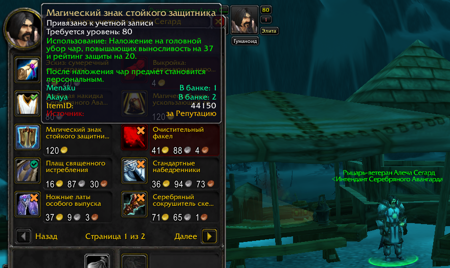
Основний ваш варіант, якщо хочете ще додати собі резистів, то йдіть до фракцій шукайте правильний
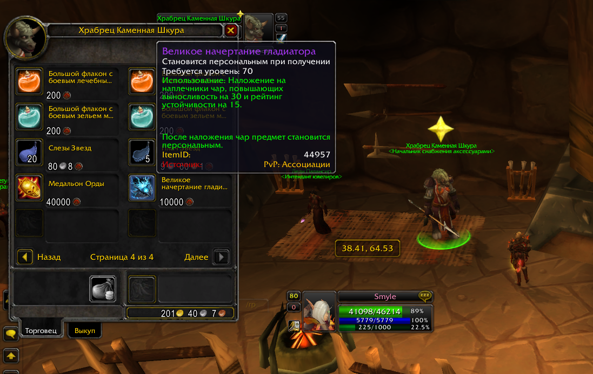
Так, це PvP-чант, але він дає нам стаміни, якщо у вас вже достатньо дефа, то має сенс обрати його :)
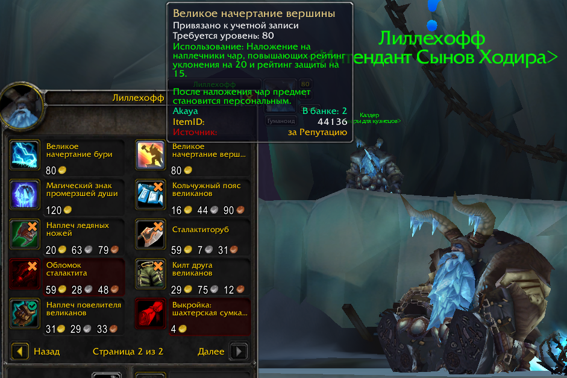
Ваш відповідний варіант, якщо дефа ще недостатньо.
Якщо маєте прокачане Начертание: Мастерское начертание вершины
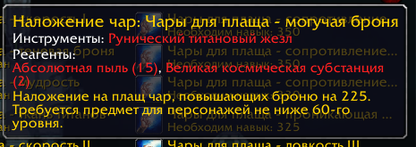
Більше армора богу армора.
З варіантів на тему можете також обирати:
Портняжное дело: Вышивка в виде рукояти меча(прок 400 сили атаки)
Інчант: Скорость ІІ (23 швидкості), Ловкость V (22 спритності), Ткань титанов (16 дефа) або будь-які спротиви, які вам потрібні.
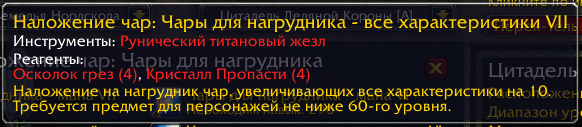
Я обираю цей. Приємний бонус у вигляді +10 до всіх характеристик.
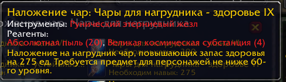
Оскільки у ЦЛК кількість вашого здоров'я збільшується завдяки бафу, можна взяти, хоча здебільшого це вибір ДК.
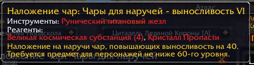
Стабільний приріст здоров'я, нічого не треба добивати? Більше стаміни богу стаміни!
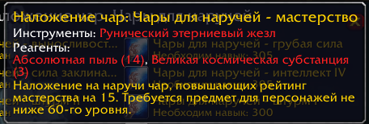
Не вистачає Мастерства? Ваш вибір :)
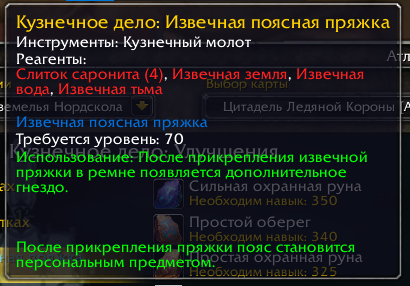
Тут варіантів не передбачено Blizzard :)
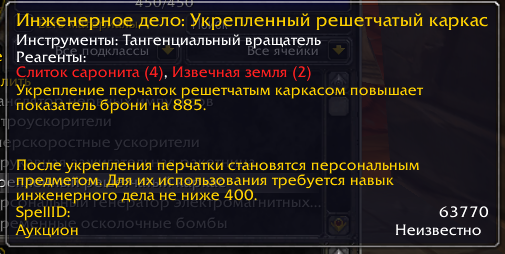
Маєте Інженерку? Більше броні богу броні!
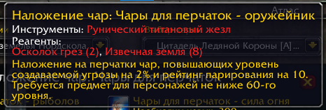
Не маєте Інженерки? Agro вам завжди знадобиться, парирування це приємно.
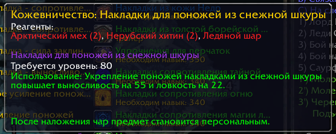
Blizzard нічого краще не придумав :)
Та й не треба :D
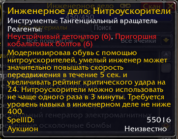
Маєте Інженерку? Ваш шанс увірватись до боса раніше, ніж добіжить пет ханта :D
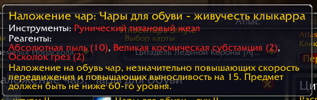
Не маєте Інженерки? Cтаміна завжди корисна. Бонус до пересування не сумується з талантом.
Тому якщо не качали [Погоня за справедливостью], ось вам заміна.
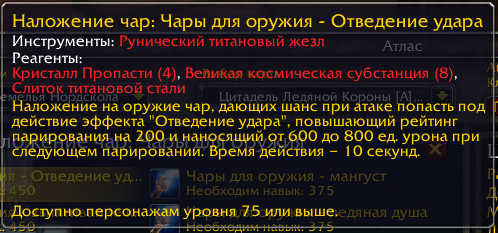
Якщо на вашому сервері добре працює прок цього зачарування, рекомендую брати.
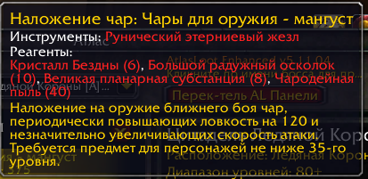
Якщо прок відведення удару працює як ви після нового року, рекомендую взяти Мангуста.
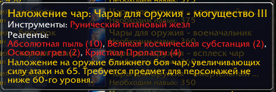
Якщо у вашій гільдії бідні / ліниві чантери, обирайте найпростіший варіант - Силу атаки.
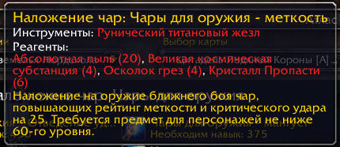
Якщо ви не можете добрати кап вашого хіта, можете також обрати цей чант :)
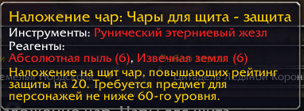
Перший найдешевший варіант, який можете обрати. Особливо у випадку, якщо капа дефа все ще немає.
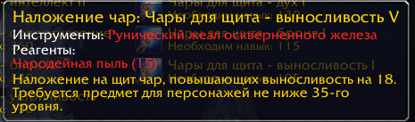
Другий найдешевший варіант, оскільки більше стаміни богу стаміни.
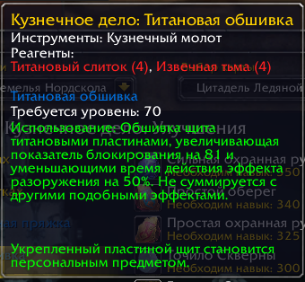
Ваш перманентний вибір. Вам треба блок щитом. Не дивіться на PvP бонус, паладін не ведмідь чи ДК, він щит носить. А луплять ваш, здебільшого, саме в щит.
Каміння
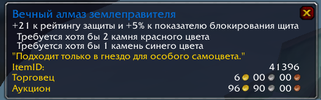
Другий варіант - "Алмаз строгого землеправителя"
+32 выносливости и увеличение показателя брони от носимой экипировки на 2%

+20 мастерства - "Ясный багровый рубин"
+20 уклонения - "Изящный багровый рубин"

+30 выносливости - "Цельный величественный циркон"

+20 защиты - "Матовый царский янтарь"

+10 мастерства +10 защиты - "Затвердевший аметрин"
+10 парирования +10 защиты - "Мерцающий аметрин"
+10 уклонения +10 защиты - "Стойкий аметрин"

+10 защиты +15 выносливости - "Отверделое Око Зула"
+10 к рейтингу меткости +15 выносливости - "Насыщенное Око Зула

+10 парирования +15 выносливости - "Страхолит защитника"
+10 мастерства +15 выносливости - "Страхолит стража"
+10 уклонения +15 выносливости - "Монарший страхолит"
Якщо якийсь зі статів вам вже не актуальний, ставим не по кольору:
+30 выносливости "Цельный величественный циркон"
Символи
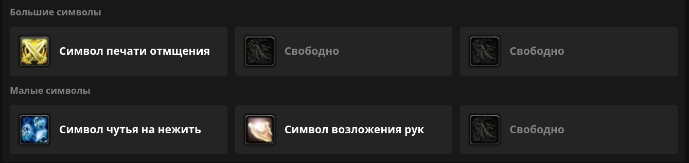
На початку вам, можливо, буде не вистачати ще однієї прожимки.
Також можна брати під РС для Халіона (особливо ХМ-режим)
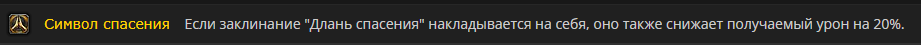
Корисно тільки в ЦЛК чи Наксрамасі. На шаркарях скажете дякую.
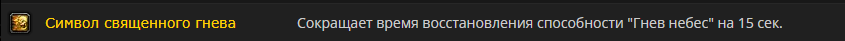
Якщо у вас постійно місує таунт, а "з руки" агро поки не перехоплюється.
Також буває корисно, коли на вашому сервері параметр Меткость веде себе дуже дивно.
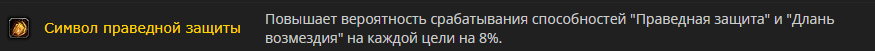
Халявний зріз 3% шкоди по вас, що діють постійно.
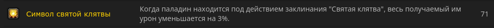
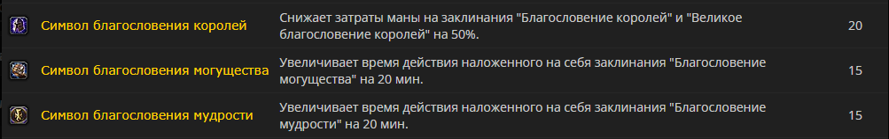
Фактично не сильно важливо, що ви оберете малим символом, можете бігати взагалі без нього
Це прожимка скоріш в моменті. За командою РЛа часто треба просейвить саме моментну механіку. Першим натиском активуєте 2 бафи (по області в 30 м навколо вас: передача 30% отримуваної шкоди рейду на вас та -20% дамагу), другим натиском знімаєте з себе баф, який передає дамаг з рейду на вас. Сейв на 6 секунд :)
Скидалка всякої фігні: стаки на Гниломорді тощо.
Опис, коли використовувати цей макрос...
Повірте, знайдете такого, хто буде зривати з вас боса.
Діспельте людей без кліку. Також, якщо наводитесь на моба, то діспелите себе.
Вас ніхто не засуджує. Поки що...
(Дивись розділ "Ротація")
Вас ніхто не засуджує. Поки що...
(Дивись розділ "Ротація")
Гір на перші рейди
Стартовий сет екіпіровки для входу в перші рейди.
Папка (за зразком): firstraids/ — додай свої скріншоти й онови src нижчеСписок предметів, джерела (підземелля/PvP/крафт)...
Рекомендації по шмоту
Пріоритетні предмети екіпіровки по слотах для прогресу далі по рейдах.
Папка (за зразком): gear/ — додай свої скріншоти й онови src нижчеСписок по слотах, джерело дропу...
Не забувайте з пула давати по собі:
Великое благословение неприкосновенности
(баф зі щитком, це ваша мана за кожен пейр, блок або уклон)
Святую клятву
(щоб мана не закінчувалась, кожен ваш удар зблизька чи правосуддям поновлює його дію)
(але не бонус т10, майте на увазі)
Священный щит
(який треба підтримувати на собі, не дрочіть хпала)